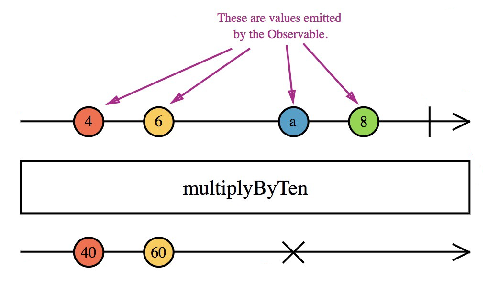

Created: 2019-01-18 пт 19:43
Marble diagrams are a way to visually represent Observables
Marbles represent values of events being emitted by Observable 
The passage of time is represented from left to right
A vertical line represents the completion of an Observable
Box represents operator that transforms an Observable
Cross sign represents an error emitted by output Observable
// (dash) simulates the passage of time
'------'
// (pipe) emit end of stream
'------|'
// (pound) indicate an error
'------#'
// (alphanumeric) characters are values being emitted
'---a--b--c--|'
'---a--b--#'
// on frame 2 emit a, b, and c, then on frame 8 complete
'--(abc)-|'
// on frame 5 emit a and complete
'-----(a|)'
// on frame 0 emit a, on frame 10 emit b,
// on frame 10,012 emit c, then on on frame 10,013 complete
'a 9ms b 9s c'
// on frame 2 emit a, on frame 150,003 emit b and never complete
'--a 2.5m b'
const a = cold("--1--2--|");
const asub = "^-------!";
const expected = "--2--3--|";
const result = a.map(s => `${Number(s) + 1}`);
expectObservable(result).toBe(expected);
expectSubscriptions(a.subscriptions).toBe(asub);
const a = cold("--1--2--|");
const b = cold( "--3--|");
const asub = "^-------!";
const bsub = "--------^----!";
const expected = "--1--2----3--|";
const result = a.concat(b);
expectObservable(result).toBe(expected);
expectSubscriptions(a.subscriptions).toBe(asub);
expectSubscriptions(b.subscriptions).toBe(bsub);
const a = cold("--1--2--|");
const b = hot("^----3----4--|");
const asub = "^-------!";
const bsub = "--------^----!";
const expected = "--1--2----4--|";
const result = a.concat(b);
expectObservable(result).toBe(expected);
expectSubscriptions(a.subscriptions).toBe(asub);
expectSubscriptions(b.subscriptions).toBe(bsub);
const a = cold("-1-----2----|");
const b = cold("-3-----4----|");
const asub = "^-----------!";
const bsub = "^-----------!";
const expected = "-(13)--(24)-|";
const result = a.merge(b);
expectObservable(result).toBe(expected);
expectSubscriptions(a.subscriptions).toBe(asub);
expectSubscriptions(b.subscriptions).toBe(bsub);
You can't directly test RxJS code that consumes Promises
You also can't currently assert delays of zero, even with AsyncScheduler, e.g. delay(0)
const a = cold("-1-----2----|");
const b = cold("-3-----4----|");
const asub = "^-----------!";
const bsub = "^-----------!";
const expected = "-(13)--(24)-|";
const result = a.merge(b);
expectObservable(result).toBe(expected);
expectSubscriptions(a.subscriptions).toBe(asub);
expectSubscriptions(b.subscriptions).toBe(bsub);
Created by yjwen.